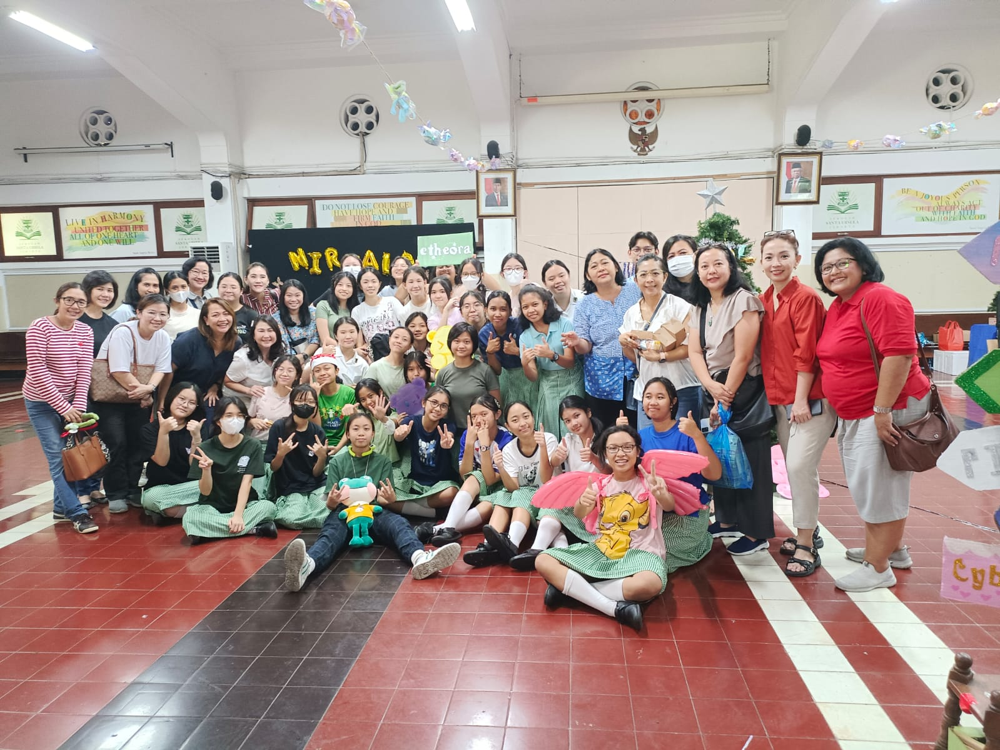
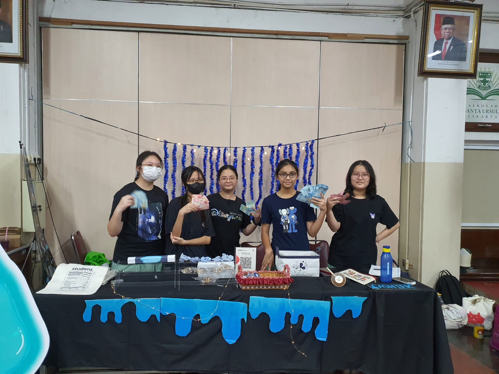

Laporan Pelaksanaan
3.1 Laporan pelaksanaan
Bazaar dipersiapkan mulai pukul 7.00 pagi, sehingga kami memiliki waktu untuk membereskan booth,
peralatan, bahan, serta produk untuk bazar sebelum kegiatan dimulai. Kegiatan pertama adalah memasak, maka kelas kami yang berkumpul semua di
dapur sekolah. Di dapur sekolah, kami hanya diperbolehkan untuk membuat makanan untuk prakarya. Waktu yang diberikan untuk memasak sekitar satu
jam. Kami memasak chicken popcorn. Sebelumnya, ayam yang kami gunakan untuk chicken popcorn sudah kami marinasi malam sebelumnya, sehingga untuk
mengurangi waktu, kami hanya perlu menggoreng chicken popcorn tersebut. Kami memasukkan chicken popcorn dalam kemasan setelah menggorengnya.
Kami juga menyisihkan satu kotak chicken popcorn untuk karyawan. Setelah bersih-bersih, kami akhirnya dapat turun ke bawah. Setelah selesai
dengan tugas prakarya yaitu memasak, kami lanjut menyiapkan booth kami, seperti dekor-dekor booth. Dekor booth kami terdiri dari lampu-lampu
kelap kelip, taplak hitam dan dekorasi acrylic stand berupa slime, spanduk, dan tulisan nama kelompok kami. Kami dan juga menata produk yang
akan di jual. Kami memanaskan beberapa makanan menggunakan air fryer dan teflon. Selain itu, kami juga membuat minuman-minuman kami, dengan
menambahkan sirup-sirup dengan soda, karena jika kami menyatukannya sehari sebelum, minuman tersebut tidak akan berkarbonasi. Kami juga mengganti
baju menjadi baju berwarna hitam. Setelah kami selesai menyiapkan booth kami, kami menunggu sampai bazaar dimulai yaitu jam 9 yang merupakan jam
istirahat kami. Selama kami menunggu bazaar dimulai, kami sangat gugup namun senang di waktu yang bersamaan karena ada banyak hal yang dapat
terjadi selama pelaksanaan bazaar ini.
Pada awal-awal bazaar dibuka, kami justru sedikit kewalahan ketika mencatat data penjualan karena adanya kesibukan kami yang lainnya seperti
melayani pembeli dan ada beberapa anggota kelompok yang tidak sengaja mengambil kembalian sendiri dan tidak mencatat, karena kasir sedang sibuk
dengan pembeli lain. Beberapa kali juga ada anggota yang salah mencatat dan memberikan harga lebih murah kepada pembeli. Namun, setelah beberapa
waktu, kami pun mulai terbiasa sehingga bazaar yang menyibukkan ini justru terasa menyenangkan bagi kami. Kami dapat mengatasi permasalahan
tersebut dengan lebih memperbanyak komunikasi dan mengubah cara penulisan data agar lebih praktis. Setelah selesai ronde pertama, pada istirahat
pertama, 60% barang kami sudah terjual habis. Salah satu best-sellernya adalah simple dimple dan chicken popcorn. Setelah selesai istirahat
pertama, barang yang sudah habis adalah simple dimple, dan jepitan bintang yang dijual khusus bazaar. Kami juga memberikan freebies berupa
keychain dengan maskot kami, jika pembelian mencapai Rp 50.000,00 atau lebih. Walaupun uang kembalian kami sedikit kurang, kami terbantu dengan
adanya scan QRIS, sehingga konsumen yang tidak dapat mendapatkan kembalian dapat menggunakan scan QRIS.
Setelah sekian waktu, kami pun mendapatkan waktu untuk istirahat setelah jam istirahat sekolah selesai. Dalam waktu itu, kami mengatur kembali
penataan produk, menyiapkan makanan dan minuman yang sudah habis, serta menyingkirkan barang-barang kami yang tidak tertata dengan rapi. Namun,
pada saat waktu tersebut, saat kami sedang membuat purplemonade, salah satu dekorasi kami jatuh sehingga banyak produk kami yang jatuh dan
terbuang. Hal tersebut sangat berdampak baik bagi pengeluaran karena kami tidak dapat menjualnya lagi, dan waktu karena kami harus
membersihkannya. Selama persiapan sebelum ronde kedua, kami juga lebih fokus dalam memanaskan berbagai makanan, dan menyiapkan
makanan-makanan PO.
Setelah itu, saat istirahat kedua, kami dapat menjalankan bazaar dengan lebih fokus. Kami dapat mencatat dan melakukan hal-hal
lebih efisien, karena belajar dari istirahat pertama. Saat istirahat kedua, kami mengubah cara mencatat data, dan pemberian kembalian.
Saat istirahat kedua, kasir kami ubah menjadi dua orang, satu mencatat dan satu memberi kembalian. Selain itu, kami juga memiliki dua orang
yang membantu pembeli dan mengambilkan barang, dan satu orang yang membuat minuman/makanan. Saat istirahat kedua, kami mulai mencoba
menghabiskan stok kami. Sehingga kami memberikan diskon dan potongan harga. Seperti jika seseorang membeli barang yang jumlahnya Rp 44.000,00
kita menawarkannya untuk juga membeli jepitan dengan harga Rp 10.000,00 untuk harga Rp 6.000,00 agar uangnya menjadi Rp 50.000,00. Selain itu,
kami juga menurunkan beberapa harga barang, seperti harga jepitan hati dari Rp 10.000,00 menjadi Rp 8.000,00. Setelah istirahat dan pulang
sekolah, kami mendapatkan sedikit sisa barang, kecuali tote bag yang sisa banyak. Setelah pulang, kami mulai mengumpulkan data apa saja yang
dijual, data modal, dan juga menjumlahkan uang yang didapat.
